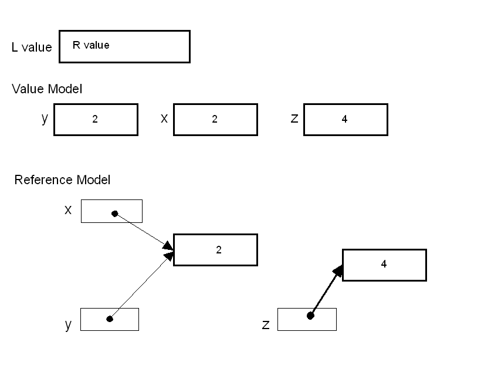
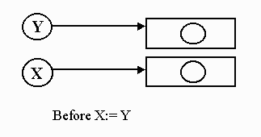
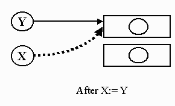
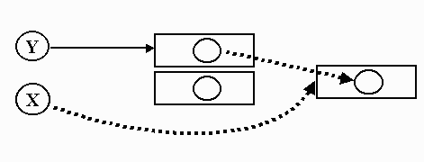

Control Flow: Fall 06
Goal
- To
understand the difference between reference model languages and value
model.
- To appreciate the ramification of operators with side-effects.
- To understand iterators.
What will be covered ?
- L-Values, R-Values,
- Reference vs Value model of variables
- immutiable objects
- Assignment operators
- Side-effects
- The principle of orthogonality
Value and Reference model of variables:
Assignment in Value Model
vs Reference Model:
- Value model -
- Container model
- copy values -- storage semantics
- Reference model
- assignment by sharing
- assignment by cloning

Python:
a = 3
b = a
a = 'spam'
X = [1,2,3]
L = ['a', X , 'b']
X[1] = 'hum'
Storage Semantics
- The principle way a mutable variable changes it value is
through
assignments.
- In
a value model a variable has both a
location and a value associated with it, we must distinguish between
the two.
- structs in C/C++ and classes in C++ use value model
- In a reference model the distinction between l-value and
r-value
are more explicit
- Pascal vs Clu:
Syntactically correct code in both languages:
y := 2;
z := y;
x := y + z;
Semantically different:
Pascal code could be described as follow:
Put the value 2 in y.
Copy the value from y
into z.
Read the values in y
and z
then add them together
place result in x
Clu code could be described as follows:
Let y
refer to the
value 2
Let z
refer to the
same value y
refers to
Pass these references to "+" for evaluation
x
refers to the
result
- Other semantics for assignments: Pointer Semantics X:=Y

- Binding location to variables (assignment by sharing)

- Create new location and copy value

- Which of the three assignment models does Java follow for
Reference types?
- Which of the three assignment models does Java follow for
Primitive types?
L-Value/R-Value
- L-value is an expression that refers to storage
area
- R-value is an expression that denotes value
- Immutable objects only have R-values
- Under the value model, the context of an expression
determines whether is it an L or R Value.
- To further clarify l-value and r-values-- &
(reference)address operator
- int
arr[5];
int *pt;
pt = &arr[0]; /* points to the first element of the array */
is illegal since &i is an expression and is an
r-value. It's value is the address (or l-value) of i. Since it is NOT an l-value expression you can not assign a
value.
Error “ must be a l-value”
5 = x;
error: invalid lvalue in unary '&'
& (& z);
- In reference model languages,every varaible is an l-value. When
it appears in a context that expect an r-value, a dereference is made
to obtain the value the variable refers to.
Expressions
- In its pure form, expressions return value and do not
change
state.
- i.e. have no side effects
- Statements are executed for the side effects and return no
value.
- In Haskell all functions/operators have no side effects.
- Procedural language usually allow function to have side
effects.
- C, C++, and Java have operators that
not only return a
value but also have side effects.
Alternate Assignment Operators in C, C++, Java C#
- "=", is both an expression and has a side effect
- "=" is right associative
x = 5;
a = b = 10*5 +x;
- Alternate assignments and unary operator -- appear to have the same semantics.
int x = 0;
x = x + 1;
x += 1;
x++;
- If the memory location has to be calculated twice then the
results may differ. Alternate assigns can have unexpected
side effects.
- Java code
static int n = 0;
static int [] A = new int[2];
static int f() {
if (n == 0) {
n=1;
} else {
n = 0;
}
return n;
}
static public void main (String [] arg) {
A[f()] = A[f()] +1; // 0 1
A[f()] += 1; // 0 2
A[0] = A[1] = n = 0;
A[f()] += 1; // 0 1
A[f()] = A[f()] + 1; // 2 1 }
}
- Multiway assignments
- In Python, the comma on the rhs defines a tuple of
multiple r-values and the comma on the lhs produces a tuple
of l-values
- a , b = 15 , 3*25
Order of Evaluation of Operators and Parameters
- Order of Evaluation of Operators and Parameter
- Order of evaluations: "Which branch" of the parse tree node
is
evaluated first.
- C specification does not specify the order of evaluations
of
the operands of most operators
- The order of evaluation for binary operators to be
determined
by the compiler writer. (i.e. implementation time)
- Why did C designers make this decision?
- True also for Ada and Pascal.
- The same is true for evaluating parameters of function
calls.
int a =2;
int x;
x = ++a + a; /* expression 1 */
a = 2;
x = a + ++a; /* expression 2 */
- The order in which expression 1 (and 2) are evaluated are
determined at implementation time.
- Order of evaluation of parameters:
int fun (int a, int b) {
return a + b;
}
int main(void){
int a =2;
int x;
x = fun (a,a++);
printf("fun(a,a++): x %d, a %d\n\n",x,a);
a = 2;
x = fun (a++,a);
printf("fun(a++,a): x %d, a %d\n\n",x,a);
}
- gcc- output:
fun(a,a++): x 5, a 3
fun(a++,a): x 4, a 3
-
Another target
machine, or another compiler could have a different result.
Operators with Side Effects : C, Java, C++
- These expressions change memory as well as returning a
value.
x = (y = z)
x++
--y
- In C it is implementation dependent when side effects are
applied
- What is the evaluation of the following expression
containing
side-effect
operators:
(Assume all side effect happens as soon as possible.)
- int n = 3;
int x = ++n * n++ - --n
- Assume left to right evaluation:
(~> 12)
++ n * n++ - --n
~> (++n * n++) - --n where n = 3
~> (4 * n++) - --n
where n =4
(why?)
-->(4*4) - --n
where n =5
-->(4*4) - 4
where n =4
- Assume right to left evaluation: (~> 6)
++ n * n++ - --n
~> (++n * n++) - --n
where n = 3
~> (++n * n++) - 2
where n = 2
-->(++n*2) - 2
where n =3 (why?)
-->(4*2) - 2
where n =4
- Unlike C, Java specifies exactly when the side
effects
happen.
int i = 0;
i = i++;
System.out.println(i);
- Prints 0 ---
- Java notes the value of i, increments i then makes the
"=" of
the
noted value.
Conditional
Statements
vs Conditional Expressions
- Pascal and Ada use only conditional statements.
- Algol, C and Java have both Conditional Expressions and
conditional statements.
Pascal: if count = 0 then aver := 0 else aver := sum/count
C/Java: aver = (count == 0) ? 0: sum/count;
Algol 60 : aver := if count = 0 then 0 else sum/count
Algol 68 : aver := if count = 0 then 0 else
sum/count fi
Lisp: (setf aver (if (= count) 0 (/ sum count)))
Haskell : aver count sum = if count==0 then 0 else sum/count
- What is the primary difference between the conditional
operator
and the conditional statement?
- What is the primary difference between
“=“ operator in
C/Java/C++ and the “=:” in Pascal ?
Relational and Boolean Expressions
- Relation operator compares two operands and returns a
Boolean.
- Most languages have the type Boolean.
- C does not have the type boolean.
- 0 is considered false anything else is true.
- What is the value computed below?
a > b > c /* a = 10 , b
= 9, c = 5 */
Boolean Expressions
- Design issue: How many parentheses are necessary.
- Ada: The boolean operators have the same precedence and
are
nonassociative.
is illegal. The parentheses must be supplied.
(A > B and A < C) or K = 0
- Pascal: The boolean operators have higher precedence than
relational operators.
is illegal. The correct version is
Short circuit evaluation
- The default in C and Modula-2 is for logical
“and”/”or” to be
short circuit.
int A[10]; /* A has indices 0..9 */
...
if ( j < 10 && A[j] != 0)
…
This is doing index range checking! If the condition j<10 is
false
then second expression will not be evaluated. - Ada and
Pascal do
not guarantee the order of evaluation.
- Further more, both may be evaluated, even if the first
one to
be evaluated turns out to be false.
- In some implementation of Pascal you could get a run-time
index-out-of-range error if j = 4 for the following code:
if ( j < 4) and (A[ ExtSqr( j ) ] <
> 0 ) then .
. .
- You might get a divide-by-zero error for the following:
if (x = 0) or (y mod x = 0) then
- Ada allows the programmer to specify short-circuit
evaluation
and thus avoid problems like the above.
if j < 10 and then A( j ) /= 0 then …
if ( x = 0) or else ( y mod x = 0) then _
- Java Boolean Logical Operators
- ‘&&’ , short circuit
‘and’
- ‘&’ ,
non-short circuit ‘and’
- ‘||’
, short circuit ‘or’
- ‘|’
, non-short circuit ‘or’
- Both '&' and '|' are over loaded operators.
- If the operands are not boolean then & is a
bitwise and
and '|' is a bitwise or.
Short Circuit operators and the Order of Evaluation
- Boolean operators that only evaluate an operands as needed
are
said to be short circuit operators.
- i.e. x && y, if
x is false then
the expression is false and therefore y does not need to be evaluated.
- C specifies that short circuit operators are evaluated from
left
to right.
- Ada and Pascal do not guarantee the order of evaluation.
Iterators and Classes in Pythons
{kind=link}